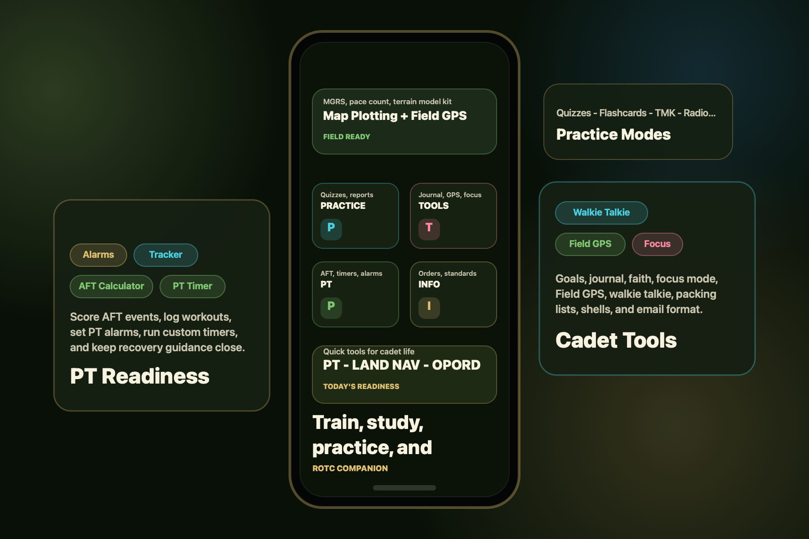

PT Readiness
AFT scoring, event guidance, workout logs, timers, alarms, Army PRT, training ideas, and recovery.
- AFT Calculator and Event Guide
- PT Tracker for AFTs, rucks, runs, workouts, and PRs
- PT Timer, PT Alarm, packing lists, and recovery tools
Train. Study. Practice. Prepare.
ROTC Companion brings PT tools, Army knowledge, field references, practice reps, Cadet Tools, and commissioning prep into one mobile hub built around how cadets actually train.

Built around cadet life
Give cadets one clean place to build fitness, study Army knowledge, rehearse tactical tasks, manage everyday cadet tools, and prepare for commissioning.
Main hubs
Browse by training need: fitness, knowledge, field skills, practice reps, personal tools, and career prep.
AFT scoring, event guidance, workout logs, timers, alarms, Army PRT, training ideas, and recovery.
Quick references for orders, standards, field craft, warrior skills, uniforms, history, and cadet basics.
Interactive reps for quizzes, flashcards, reciting, reports, orders, map plotting, and simulation practice.
Field-ready tools
ROTC Companion turns key tasks into usable tools: land navigation, radio traffic, terrain models, orders, packing lists, reports, and field preparation.
Practice grid plotting, track pace count, view live MGRS, save points, and move toward real training locations.
Study prowords, build SALUTE/SITREP/9-Line reports, then listen and respond in a simulated radio net.
Review formats, build practice products, and rehearse briefing logic with terrain model support.
Cadet Tools
Tools for personal readiness, planning, communication, admin work, spiritual reflection, and focus.
Set cadet, PT, school, and personal goals with milestones.
Private notes, reflections, reminders, lessons learned, and prayer notes.
Christian encouragement, verses, reflection prompts, prayer list, and Bible reading tools.
Screen Time guidance, app limits, study focus, and discipline tools.
Nearby push-to-talk voice clips with cadets on the same channel.
WARNO, OPORD, FRAGO, CONOP, AAR, and admin templates.
Professional cadet email structure and examples.
Track readiness, points, goals, and performance progress.
Full feature index
Use the filters to see exactly what is inside ROTC Companion.
Score Army Fitness Test events and understand performance.
Event standards, technique notes, and proper performance.
Log AFTs, rucks, runs, workouts, and personal records.
Countdowns, intervals, EMOM, AMRAP, and custom sequences.
Wake-up alarms, weekly plans, one-time events, and checklists.
Preparation drill, recovery drill, strength, mobility, and conditioning references.
Workout ideas organized by training focus.
Warmups, cooldowns, soreness management, and rest guidance.
Troop leading procedures from receipt of mission to supervision.
Warning order format, purpose, and quick issue checklist.
Five-paragraph operation order format and shell support.
Planning formats for changes, concepts, and after action reviews.
Customs, courtesies, drill, counseling, and safety briefs.
OCP, AGSU, PT uniform, inspections, grooming, and appearance guidance.
Ranks, acronyms, creeds, Army values, alphabet, history, and Army structure.
FTX prep, CST, Ranger Challenge, and Army school opportunities.
Fast study reps, knowledge checks, and spoken memorization practice.
Build orders from mission briefs and practice planning logic.
Plot grid points, use a protractor, and build land navigation confidence.
Live MGRS, UTM, lat/long, heading, altitude, waypoints, and map position.
Measure pace count and navigate to real points using location.
Build 9-Line, SALUTE, SITREP reports and practice responding on a simulated net.
Hands-on training tools for briefings, drill commands, and weapon assembly sequence.
Personal goals, private notes, Christian reflection, prayer, and focus discipline.
Nearby push-to-talk voice clips with cadets on the same channel.
Readiness lists, OPORD/WARNO shells, email format, and OML tracking.
See the cadet path and review ROTC scholarships, stipends, SMP, GRFD, and school aid.
Compare service paths, prepare accessions, and understand branch options.
No matching features found. Try searching for PT, radio, land nav, OPORD, or focus.
Independent and practical
ROTC Companion is an independent project. Users should follow cadre guidance, official regulations, and current school or battalion standards.
The app uses permissions only for the tools that need them, such as microphone access for voice practice, location for Field GPS and land navigation, notifications for alarms, and camera access for measurement tools.
Ready to show it off
Use this website to explain the app, show the feature set, and point testers or users toward contact.